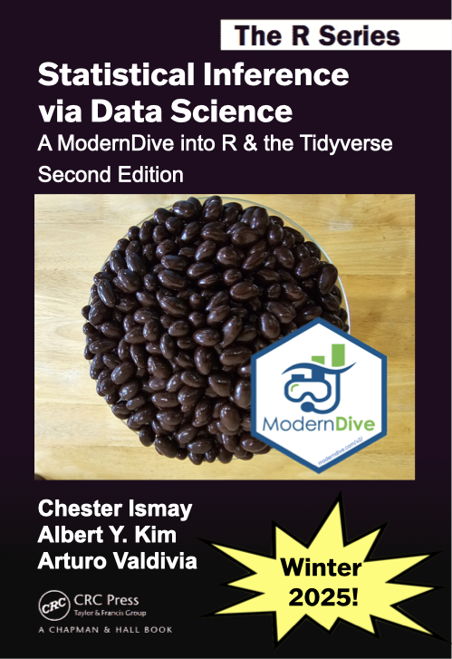

Welcome to ModernDive (v2)

This is the website for Statistical Inference via Data Science: A ModernDive into R and the Tidyverse (Second Edition)! Visit the GitHub repository for this site. It will be published as a print copy by CRC Press soon! You can find a summary of the updates in this version here.
The First Edition of this book is available at https://moderndive.com. You can find the printed copy of the First Edition on Amazon. You can also purchase it at CRC Press.

This work by Chester Ismay, Albert Y. Kim, and Arturo Valdivia is licensed under a Creative Commons Attribution-NonCommercial-ShareAlike 4.0 International License.